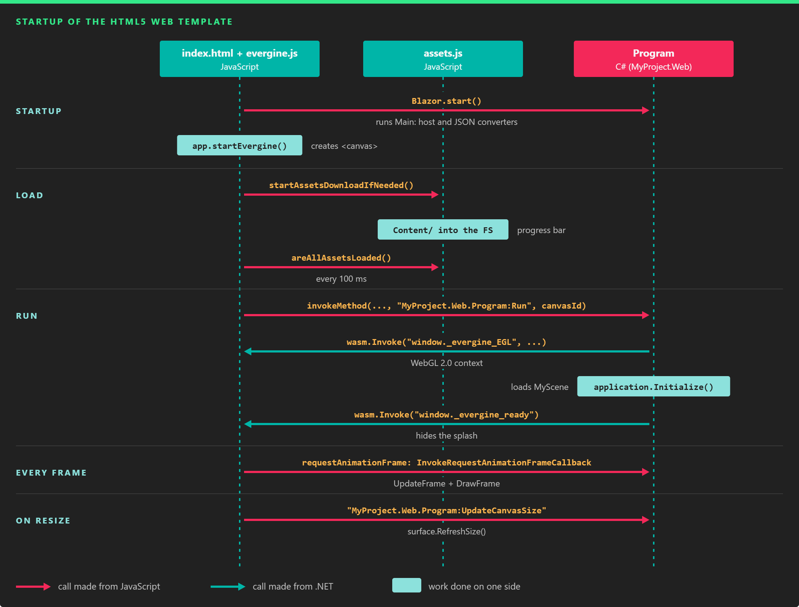

Getting started with a web application
This page creates an Evergine web application, explains what each file of the two main templates does, and shows how to call C# from JavaScript and JavaScript from C#. Read Web first for the prerequisites and the overall architecture.
Create the project
In Evergine Launcher, create a project and select a web template in Initial platforms. To add the web profile to an existing project, open Settings > Project Settings in Evergine Studio and add it there (see Manage profiles).
- Web (WebGL2.0) is the default HTML5 template. Start here unless your site is already a React application.
- React SPA (WebGL2.0) embeds the canvas in a React single-page application.
- Web (Experimental WebGPU) and WebXR (Experimental AR) follow the structure of the HTML5 template.
After you edit your scene in Evergine Studio, open the web solution with File > Open C# editor and run it from Visual Studio 2026. DevOps covers the command line.
The HTML5 template
The Web (WebGL2.0) template adds two projects next to your application project. With a project named MyProject, they are:

| Project | SDK | Role |
|---|---|---|
MyProject.Web |
Microsoft.NET.Sdk.BlazorWebAssembly |
The client. Compiles your application to WebAssembly, exports the assets and generates the page scripts. You can run it on its own during development. |
MyProject.Web.Server |
Microsoft.NET.Sdk.Web |
Optional ASP.NET Core server that hosts the client with response compression. Use it to publish (see DevOps). |
The client project contains:
| File | Purpose |
|---|---|
Program.cs |
The launcher. Main starts the WebAssembly host; Run, Destroy and UpdateCanvasSize are [JSInvokable] methods the page calls. |
wwwroot/index.html |
The page: a canvas container, a splash screen with a progress bar, and the startup script. |
ts/app.ts |
Class App: creates the canvas, waits for the assets, calls Run, and forwards window resizes. |
ts/program.ts |
Class Program: a thin wrapper around DotNet.invokeMethod that builds the method identifiers. |
ts/helper.ts |
The functions the engine calls from C#: event listeners, _evergine_EGL (WebGL context), _evergine_setRequestAnimationFrameCallback (frame loop), _evergine_ready (hides the splash). |
ts/module.ts |
Class EvergineModule: binds the canvas to the WebAssembly runtime and updates the progress bar. |
tsconfig.json |
Compiles all of ts/ into a single wwwroot/evergine.js at build time. |
link-descriptor.xml |
Types the trimmer must keep. See Tips. |
Startup sequence

JavaScript drives the start (it decides when to call Run), and C# drives every frame through requestAnimationFrame.
The page loads the Blazor script with autostart="false", then assets.js, and only then starts Blazor and Evergine:
<!-- First we load web assembly code -->
<script src="_framework/blazor.webassembly.js" autostart="false"></script>
<!-- Then, start loading the assets into the vfs -->
<script src="assets.js"></script>
<!-- Finally, run evergine -->
<script type="text/javascript">
var app = new App(
"MyProject.Web",
"MyProject.Web.Program",
new EvergineModule()
);
Blazor.start().then(function () {
// It is not mandatory to run Evergine now, but it must run after blazor is started
app.startEvergine();
});
//// It is possible to delete the Evergine instance by running
// app.destroyEvergine();
</script>
Blazor.start()loads the runtime and callsProgram.Main, which creates the WebAssembly host throughEvergine.Web.WebAssembly.GetInstance()and registers the JSON converters (see Serialization). It does not create the application yet.app.startEvergine()creates a<canvas id="evergine-canvas">insideevergine-canvas-containerand sizes it to the window timesdevicePixelRatio.waitAndRun()starts the asset download and pollsareAllAssetsLoaded()every 100 ms. While it waits,assets.jsreports progress to the splash screen.- When every asset is in the virtual file system,
program.Run(canvasId)calls the C#Runmethod. RuncreatesMyApplication, theWebWindowsSystem, the surface for the canvas and theGLGraphicsContextfor WebGL 2.0. Whenapplication.Initialize()finishes, it callswindow._evergine_readyto hide the splash.- From then on, the window system asks the browser for an animation frame on every frame and runs
UpdateFrameandDrawFramein the callback. Window resizes callUpdateCanvasSize.
The C# half of that sequence is the launcher's Program class (with the project name MyProject):
using Evergine.Common.Graphics;
using Evergine.Framework;
using Evergine.Framework.Graphics;
using Evergine.Framework.Services;
using Evergine.OpenGL;
using Evergine.Serialization.Converters;
using Evergine.Web;
using Microsoft.AspNetCore.Components.WebAssembly.Hosting;
using Microsoft.JSInterop;
using System;
using System.Collections.Generic;
using System.Diagnostics;
using System.Text.Json.Serialization;
namespace MyProject.Web
{
public class Program
{
private static readonly Dictionary<string, WebSurface> appCanvas = new Dictionary<string, WebSurface>();
private static WindowsSystem windowsSystem;
private static MyApplication application;
private static global::Evergine.Web.WebAssembly wasm;
public static void Main()
{
// Referencing a type from Evergine.Components keeps that assembly in AOT builds.
var cp = new global::Evergine.Components.Graphics3D.Spinner();
// The WebAssembly instance must be created here for the debugger to attach.
global::Evergine.Web.WebAssembly.HostConfiguration = new HostConfiguration();
wasm = global::Evergine.Web.WebAssembly.GetInstance();
}
[JSInvokable("MyProject.Web.Program:Run")]
public static void Run(string canvasId)
{
// Send Trace output to the browser console.
Trace.Listeners.Add(new TextWriterTraceListener(Console.Out));
Trace.AutoFlush = true;
application = new MyApplication();
windowsSystem = new WebWindowsSystem();
application.Container.RegisterInstance(windowsSystem);
var canvas = wasm.GetElementById(canvasId);
var surface = (WebSurface)windowsSystem.CreateSurface(canvas);
appCanvas[canvasId] = surface;
ConfigureGraphicsContext(application, surface, canvasId);
Stopwatch clockTimer = Stopwatch.StartNew();
windowsSystem.Run(
() =>
{
application.Initialize();
wasm.Invoke("window._evergine_ready");
},
() =>
{
var gameTime = clockTimer.Elapsed;
clockTimer.Restart();
application.UpdateFrame(gameTime);
application.DrawFrame(gameTime);
});
}
[JSInvokable("MyProject.Web.Program:Destroy")]
public static void Destroy(string canvasId)
{
application.Dispose();
application = null;
}
[JSInvokable("MyProject.Web.Program:UpdateCanvasSize")]
public static void UpdateCanvasSize(string canvasId)
{
if (appCanvas.TryGetValue(canvasId, out var surface))
{
surface.RefreshSize();
}
}
private static void ConfigureGraphicsContext(Application application, Surface surface, string canvasId)
{
// Create the WebGL 2.0 context with the attributes set in helper.ts (antialias, no alpha).
wasm.Invoke("window._evergine_EGL", false, "webgl2", canvasId);
GraphicsContext graphicsContext = new GLGraphicsContext(GraphicsBackend.WebGL2);
graphicsContext.CreateDevice();
SwapChainDescription swapChainDescription = new SwapChainDescription()
{
SurfaceInfo = surface.SurfaceInfo,
Width = surface.Width,
Height = surface.Height,
ColorTargetFormat = PixelFormat.R8G8B8A8_UNorm,
ColorTargetFlags = TextureFlags.RenderTarget | TextureFlags.ShaderResource,
DepthStencilTargetFormat = PixelFormat.D32_Float_S8X24_UInt,
DepthStencilTargetFlags = TextureFlags.DepthStencil,
SampleCount = TextureSampleCount.None,
IsWindowed = true,
RefreshRate = 60
};
var swapChain = graphicsContext.CreateSwapChain(swapChainDescription);
swapChain.VerticalSync = true;
var graphicsPresenter = application.Container.Resolve<GraphicsPresenter>();
graphicsPresenter.AddDisplay("DefaultDisplay", new Display(surface, swapChain));
application.Container.RegisterInstance(graphicsContext);
}
private class HostConfiguration : IWasmHostConfiguration
{
public void ConfigureHost(WebAssemblyHostBuilder builder)
{
}
public void RegisterJsonConverters(IList<JsonConverter> converters)
{
converters.AddEvergineConverters();
}
}
}
}
How the method identifiers are built
Blazor finds a static [JSInvokable] method by assembly name and method identifier. The template names every identifier <Namespace>.Program:<Method>, and ts/program.ts builds the same string from the two values passed to new App(...) in index.html:
invoke(methodName: string, ...args: any[]) {
return DotNet.invokeMethod(
`${this.assemblyName}`, // "MyProject.Web"
`${this.className}:${methodName}`, // "MyProject.Web.Program:Run"
...args);
}
The launcher's assembly and namespace are both <Project>.<Profile>, so a project MyProject with the profile Web uses MyProject.Web. If you rename the project or the namespace, update the attribute strings and the two arguments of new App(...) together.
Call C# from JavaScript
Add a [JSInvokable] method to Program with an identifier that follows the same pattern. This one finds an entity and changes the speed of its Spinner component. The Vector3 parameter arrives as a plain JavaScript object thanks to the Evergine converters:
// Add to MyProject.Web/Program.cs, inside the Program class.
// Requires: using Evergine.Components.Graphics3D; using Evergine.Mathematics;
[JSInvokable("MyProject.Web.Program:SetSpin")]
public static bool SetSpin(string entityPath, Vector3 axisIncrease)
{
var scene = application?.Container.Resolve<ScreenContextManager>()
.CurrentContext?.FindScene<MyScene>();
var spinner = scene?.Managers.EntityManager.Find(entityPath)?.FindComponent<Spinner>();
if (spinner == null)
{
// Returning a value lets the page know the call did nothing.
return false;
}
spinner.AxisIncrease = axisIncrease;
return true;
}
From the page, call it through the app object that index.html creates. invoke is synchronous, which is allowed in Blazor WebAssembly because JavaScript and .NET share the same thread:
// Spin the entity "Cube" around its Y axis. Keys are camelCase.
const changed = app.program.invoke("SetSpin", "Cube", { x: 0, y: 2, z: 0 });
console.log(changed ? "Spinner updated" : "Entity or Spinner not found");
Call it only after _evergine_ready has run: before Run there is no application, and the method returns false.
Call JavaScript from C#
Use the same WebAssembly instance the template keeps in the wasm field. Invoke takes the function path, a warn flag that logs a warning instead of throwing when the call fails, and the arguments:
// Add to MyProject.Web/Program.cs, inside the Program class.
public static void NotifySpinChanged(string entityPath, Vector3 axisIncrease)
{
wasm.Invoke("window.onSpinChanged", true, entityPath, axisIncrease);
}
Invoke<T> returns a value, and Invoke<JSObject> returns a handle to a JavaScript object. Define the function in the page, for example in index.html before the startup script:
<script type="text/javascript">
// Called from C#. The Vector3 arrives as { x, y, z }.
window.onSpinChanged = function (entityPath, axisIncrease) {
console.log(`${entityPath} now spins at ${axisIncrease.y} rad/s on Y`);
};
</script>
Call NotifySpinChanged from anywhere in your launcher code, such as at the end of SetSpin. To call it from a component in the shared application project, which does not reference Evergine.Web, define an interface or event in the shared project and implement it in the launcher.
The React template
The React SPA (WebGL2.0) template splits the web application in three projects:
| Project | Role |
|---|---|
MyProject.WebReact |
Blazor WebAssembly project with the launcher: Program.cs, CanvasLifecycle.cs, WebIntegration.cs, WebReactApplication.cs and the JavaScript bridge in js/evergine.js. |
myproject.react.spa |
The React 19 application, built with Vite. It uses the evergine-react package. Building it copies _framework, Content, assets.js and evergine.js from the WebReact output into its public folder. |
MyProject.Host |
ASP.NET Core host for production, with response compression. |
Build the solution once, then run the myproject.react.spa project: it starts the Vite development server, and React hot reload works for .tsx files. Changes to C# need a new build of MyProject.WebReact. The README.md generated in the WebReact project explains how to debug the C# code.
Who initializes what
There is no configuration file with assembly names on the React side. The C# Program.Main calls CanvasLifecycle.Initialize(), which hands a .NET object reference to the page, and the page drives the canvas through that reference. The sequence is:
src/main.tsxrunsBlazor.start().then(() => initializeEvergine()).initializeEvergine(insrc/evergine/evergine-initialize.ts) setswindow.Evergineand callsinitializeEvergineBasefromevergine-react. That defineswindow.initializeCanvasLifecycle, addsEvergine.notifyEvergineReady, and starts the asset download. When all assets are loaded, the store setswebAssemblyLoadedtotrue.- In C#,
Program.MaincallsCanvasLifecycle.Initialize(), which callsinitializeCanvasLifecyclewith aDotNetObjectReference<CanvasLifecycle>. The page keeps it aswindow.Evergine.canvasLifecycle. - When
webAssemblyLoadedbecomestrue, the<EvergineCanvas>component callscanvasLifecycle.initializeEvergineCanvas(canvasId), which invokesStartEvergineOnCanvasin C#, which callsProgram.Run(canvasId). WebReactApplicationregisters theWebIntegrationservice. When the service starts, it callsEvergine.initializewith its own .NET reference, keeps the JavaScript object that function returns, and setsIsEvergineReady. That callsEvergine.notifyEvergineReady(true), so the store setsevergineReady, and callsonEvergineReadyChanged(true)on the returned object.- When
<EvergineCanvas>unmounts, it callsStopEvergineOnCanvas, which disposes the surface, the window system and the application. Size changes callRefreshCanvasSize.
useEvergineStore() exposes webAssemblyLoaded and evergineReady. Wait for both before you call into Evergine. This is the template's App.tsx:
import { useEvergineStore, EvergineCanvas } from "evergine-react";
import { useContainerSize } from "./evergine/useContainerSize";
import { useRef } from "react";
import './App.css'
function App() {
const { webAssemblyLoaded, evergineReady } = useEvergineStore();
const canvasContainer = useRef<HTMLDivElement>(null) as React.RefObject<HTMLDivElement>;
return (
<div className="App">
{(!webAssemblyLoaded || !evergineReady) && (<div className="loading">Loading Evergine...</div>)}
<div className="canvas-container" ref={canvasContainer}>
<EvergineCanvas
canvasId="evergine-canvas"
width={useContainerSize(canvasContainer).width}
height={useContainerSize(canvasContainer).height}
/>
</div>
</div>
);
}
export default App;
Call between React and C#
WebIntegration is the place for your own calls, because it holds both directions: its .NET reference is what the page receives in Evergine.initialize, and the object the page returns is what C# calls back.
Step 1. Add the methods in C#. Extend WebIntegration.cs in the WebReact project:
using Evergine.Framework.Services;
using Microsoft.JSInterop;
using Microsoft.JSInterop.Implementation;
using System;
using System.Threading.Tasks;
namespace MyProject.WebReact
{
public class WebIntegration : Service, IDisposable
{
private JSObjectReference reference;
private DotNetObjectReference<WebIntegration> dotnetReference;
private bool isEvergineReady;
public bool IsEvergineReady
{
get => this.isEvergineReady;
set
{
if (this.isEvergineReady != value)
{
this.isEvergineReady = value;
Program.Wasm.Runtime.Invoke<JSObjectReference>("Evergine.notifyEvergineReady", this.isEvergineReady);
this.reference.InvokeVoidAsync("onEvergineReadyChanged", this.isEvergineReady);
}
}
}
// Called from React through the .NET reference passed to Evergine.initialize.
[JSInvokable]
public ValueTask HelloFromSpa()
{
Console.WriteLine("Received a hello from the SPA");
return this.SayHelloToSpa();
}
// Calls a function on the object that Evergine.initialize returned.
public ValueTask SayHelloToSpa() => this.reference.InvokeVoidAsync("helloFromCSharp");
public void Dispose()
{
this.dotnetReference?.Dispose();
}
protected override void Start()
{
base.Start();
if (this.dotnetReference == null)
{
this.dotnetReference = DotNetObjectReference.Create(this);
this.reference = Program.Wasm.Runtime.Invoke<JSObjectReference>("Evergine.initialize", this.dotnetReference);
}
this.IsEvergineReady = true;
}
}
}
Instance methods on a DotNetObjectReference need only [JSInvokable]: the page calls them by method name, without an assembly name.
Step 2. Add the functions in the SPA. In src/evergine/evergine-initialize.ts, extend the WebIntegration type that evergine-react declares, and add the two functions to the object you return:
import { initializeEvergineBase } from "evergine-react";
declare global {
let Blazor: { start(): Promise<void> };
interface MyWebIntegration extends WebIntegration {
helloFromCSharp: () => void;
sayHelloToCSharp: () => void;
}
interface Window {
App: MyWebIntegration;
}
}
const initializeEvergine = (): void => {
window.Evergine = {
initialize: (dotNetReference: DotNet.DotNetObject) => {
const evergineApp: MyWebIntegration = {
onEvergineReadyChanged: (isReady: boolean) => {
console.log(`Evergine ready ${isReady}`);
},
// Called from C# by WebIntegration.SayHelloToSpa.
helloFromCSharp: () => console.log("Received a hello from C#"),
// Calls the [JSInvokable] instance method on the WebIntegration service.
sayHelloToCSharp: () => dotNetReference.invokeMethod("HelloFromSpa"),
};
window.App = evergineApp;
return window.DotNet.createJSObjectReference(evergineApp);
},
onEvergineAssetLoaded: (asset: EvergineAsset) => {
console.log(`Evergine asset ${asset.name} loaded`);
},
onEvergineAllAssetsLoaded: () => {
console.log("Evergine assets loaded");
},
};
initializeEvergineBase(window.Evergine);
};
export { initializeEvergine };
Step 3. Call it from a component. Add a button to App.tsx, enabled only when Evergine is ready:
<button
disabled={!evergineReady}
onClick={() => window.App?.sayHelloToCSharp()}>
Say hello to C#
</button>
Clicking the button prints both messages in the browser console:
Received a hello from the SPA
Received a hello from C#
To pass Evergine types such as Vector3 or Color in either direction, see Serialization. Next, read how to build and publish the app and how to make it load faster.